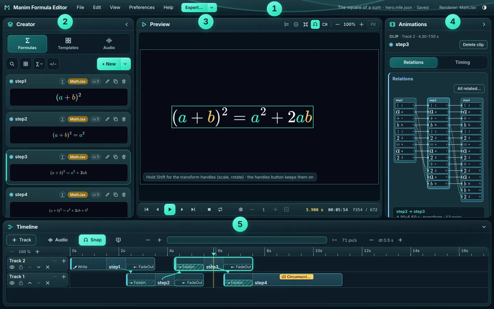

What the editor does
The Manim Formula Editor is a browser app for animating formulas. You write them in LaTeX, lay them out in time, turn one into the next, and export the scene for Manim or as a video.
See it move
Four formulas, one on each step of (a+b)^2 = a^2 + 2ab + b^2. The glyphs that stay glide to their new places, new ones come in, and a block at the end draws a box round the result. The letters a and b keep their colours all the way.
The player is the editor's own renderer playing the project, so the strip under the scene is the timeline the scene was built on: two tracks of clips, the three transformations between them, and the block at the end. You can download this project and open it in the editor to take it apart: choose File ▸ Open…, then press Other file… in the dialog (Projects and files explains it).
The idea
Manim can turn one formula into another, but you describe it in code, glyph by glyph: formula[0][3] is the fourth symbol, and you count them by hand. The editor makes that visual. You write the formulas, put them on a timeline, say which glyph of the first becomes which glyph of the second, and press Play. When the animation looks right, you export it.
A glyph is one drawn symbol of a formula: the x, the +, the 3. A clip is one appearance of a formula on the timeline. A relation says how the glyphs of one clip become the glyphs of the next.
The editor is for teachers, video makers and anyone who explains mathematics by showing it move. You can know a little LaTeX and no Manim at all.
The workflow
- WriteCreatorformulas and texts, in LaTeX
- PlaceTimeline, Previewclips on tracks, set in the frame
- AnimateAnimationsintros, outros, animation blocks
- TransformAnimationspairs of glyphs between formulas
- ExportExport… buttonPython for Manim, video, sound
- Write. Press + New in the Creator and write a formula in a visual math field or in raw LaTeX; the two stay in step. Texts are written there too. Writing formulas
- Place. Drag a formula onto a track of the timeline. Its clip says when the formula is on screen; the Preview says where. The timeline, the Preview
- Animate. Each clip can come in and go out with an intro and an outro (Write, FadeIn…), and take animation blocks in between, such as an emphasis. Appearing and disappearing, animation blocks
- Transform. Relate the glyphs of one clip to the glyphs of the next, and the formula turns into the other. Inside one formula, a Morph block writes a derivation line by line. A first transformation, relations, Morph blocks
- Export. Choose Export ▸ Python — ManimCE… or Python — ManimGL… for a scene Manim runs, or Video… for a file. Exporting
The window
The editor is one window with a menu bar and four panels. Each panel is a step of the workflow.

- The menu bar holds the file commands, the edit commands, the view and the preferences, the export, and the help. It also shows where the project is saved.
- The Creator keeps what you can put in the scene: your formulas and texts, a library of templates, and your audio recordings.
- The Preview draws the scene at the playhead. Click a formula to select it, drag it to move it, and play the scene from the bar under it.
- The Animations panel edits the selected clip: its relations to other formulas, its timing, and its animations.
- The Timeline lays the scene out in time: tracks of clips under a ruler, with the playhead you scrub.
The next pages take you through them one by one: a tour of the interface.
How one formula becomes another
This is the idea the editor is built on. To turn x + 3 = 5 into x = 5 − 3, you do not move the whole formula: you pair its glyphs. The x goes to the x, the equals sign to the equals sign, and so on. A glyph with no partner leaves with the outro of its clip, or comes in with the intro of the next clip: in this example, a fade out and a fade in.
Here is the same relation running, as the editor plays it:
Now make the pairs yourself. Click a glyph of the formula on top and then a glyph of the formula below: a line joins them. Give each glyph its partner, the x, the equals sign, the 5 and the 3; the plus sign and the minus sign have none, and the line under the drawing says what happens to them. Then choose Preview in the switch above the drawing to watch the transformation with your pairs. Suggest links by label offers the pairs the editor would make by itself.
And here is what the editor writes for Manim from that relation, an excerpt of the exported file. Each pair here is one ReplacementTransform; the glyph with no partner on the left is a FadeOut, the outro of its clip, and the one with no partner on the right is a FadeIn, the intro of its clip:
# 2.2 s – 3.2 s: step1 fade_out, step1 → step2, step2 fade_in
self.play(
FadeOut(step1_g[1]),
ReplacementTransform(step1_g[0], step2_g[0]),
ReplacementTransform(step1_g[3], step2_g[1]),
ReplacementTransform(step1_g[4], step2_g[2]),
ReplacementTransform(step1_g[2], step2_g[4]),
FadeIn(step2_g[3]),
run_time=1,
)You never write those lines. You make the pairs by clicking, or let the editor suggest them, and the Python follows. How relations work says what a pair can do.
What you get
| You make | With | It is |
|---|---|---|
| Python for Manim | Export ▸ Python — ManimCE… or Python — ManimGL… | A .py scene that renders the same animation in ManimCE or in ManimGL. |
| A video | Export ▸ Video… | A file drawn frame by frame by the editor and encoded in the browser, as MP4 or WebM. With the companion, ffmpeg can encode it instead (MP4, WebM, ProRes or GIF), or your own Manim can render it. |
| Sound | Export ▸ Audio… | The sound of the project, mixed into one WAV or WebM file (M4A where your browser can encode AAC). |
| Your work | File ▸ Save | A .mfe.json project file, or a .mfe package when the project holds recordings. |
The video the editor draws itself needs no Manim at all. The Python is for when you want Manim's own render, or want to change the scene by hand afterwards. The generated Python explains the file.
What you need
| Part | Do you need it? | What it gives you |
|---|---|---|
| A browser | Yes | The editor itself. Chrome or Edge read and write your files in place; Firefox and Safari work on copies. Browsers |
| Manim | Only to run the exported Python | ManimCE 0.22 or ManimGL 1.7 render the .py file the editor writes. Manim |
| The companion | No | A small Python program you start yourself. It adds exact LaTeX glyphs, font text, fast video encoding with ffmpeg, and rendering with Manim. The companion |
| Chroma Lab | It comes inside | A colour studio for designing palettes, opened from Preferences ▸ Chroma Lab…. Chroma Lab |
Where to go next
The pages are in the order of a first project. Getting the app running comes next, then your first animation, step by step. After that, each section builds on the ones before it: the basics, transformations, animations and timing, texts and objects, layout, colour, audio and video, and Manim. The examples on these pages play in the page and download as projects you can open in the editor.
Or start from what you want to do:
| If you want to… | Read |
|---|---|
| Make a first animation, step by step | Your first animation, then Solving a linear equation |
| Know your way around the window | A tour of the interface, Projects and files |
| Show an equation changing, line by line | How relations work, Transformation recipes, Morph blocks |
| Colour the parts of a formula | Colouring glyphs and objects, Palettes and Chroma Lab |
| Add braces, boxes, lines and arrows | Braces, Shapes, Lines and arrows |
| Get a video, with sound | Exporting, Audio, Exporting video |
| Use the Python in Manim | The generated Python, ManimCE and ManimGL |
| Look something up | Shortcuts, Every menu, Glossary, Troubleshooting |